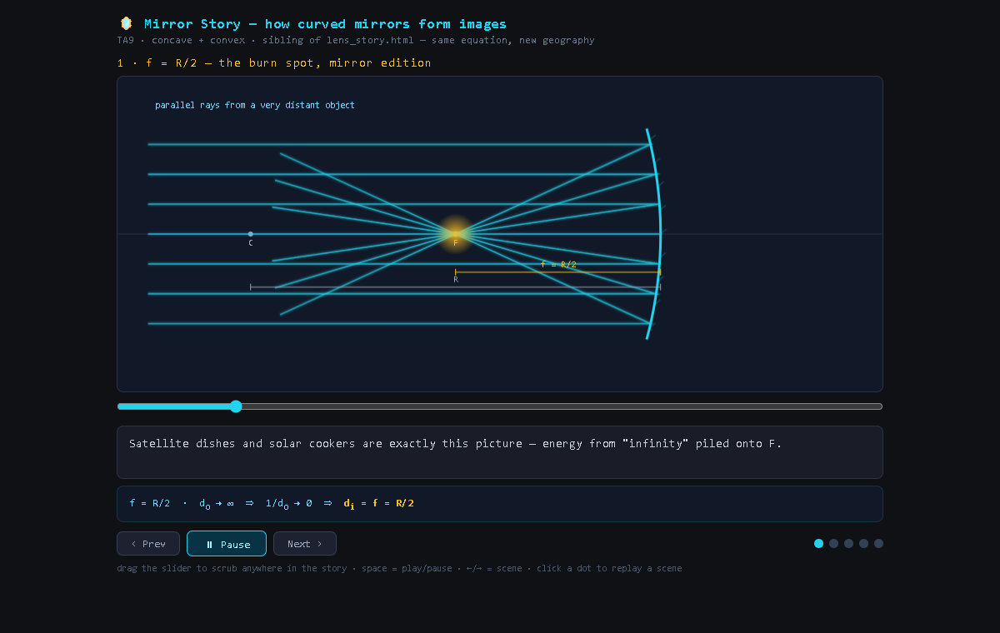
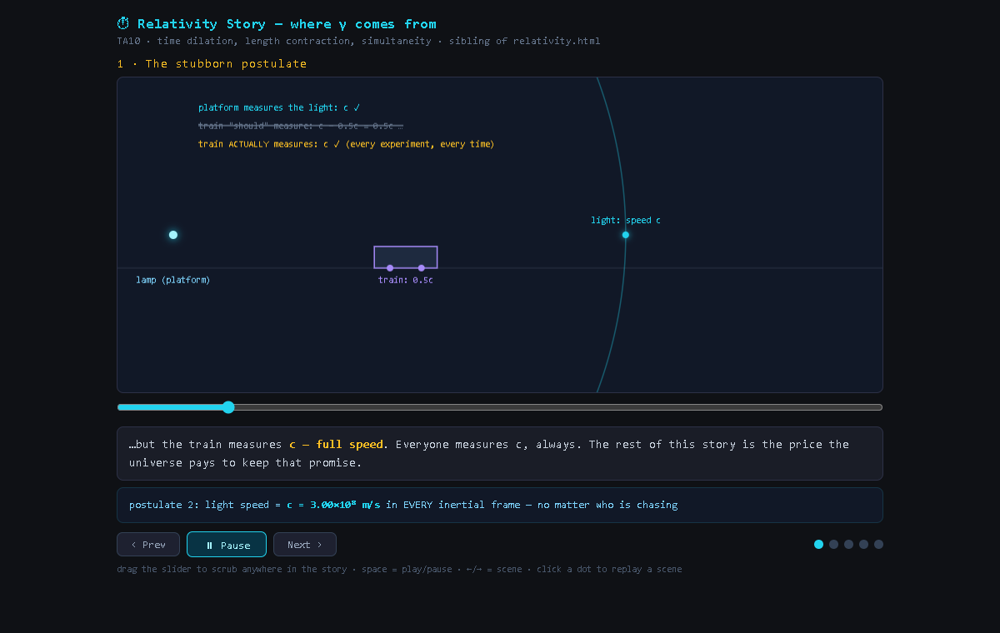

02 · The work
Animated explainers and interactive sims, made with AI and checked by eye
For one physics course, AI agents built 97 single-file web pages under my direction: 94 interactive simulations and 3 animated explainers that play scene by scene with captions. The explainers and one simulation are public.
97single-file pages for one course
78 sLens Story v2, 6 scenes, 25 timed beats
29.7 → 1.6 msheaviest scene's draw time per frame, v1 → v2 (budget 16.7 ms)



Interactive
Projectile motion, reference sim
Learn it, drag the sliders, then quiz yourself. It is also the template the AI copies to make a new sim on any topic, with the build guide beside it.
Draw times are the median per frame on the same probe for both versions, measured in Chrome during the review stage.